Жизнь, как вода, — бежит и протекает,
Не позволяй ей течь на самотёк.
Пусть сердце каждый миг запоминает,
Оно само решит, куда направить твой поток.
Я не полагаюсь на случайные кадры и ожидание внезапного вдохновения. Классная фотография — это не магия, а выверенный результат рабочего процесса.
Главный принцип — убрать из кадра лишнее, и оставить только суть. Идеальный продукт рождается там, где
комфорт встречается с качеством, это я и вложил в название.
«Чистая эстетика формы»
Портрет, предметная съемка или сложный креатив — всегда зависят от конкретной задачи: показать характер, выделить продукт или воплотить идею.
МОЙ НЕПОКОЛЕБИМЫЙ МАНИФЕСТ.
ЦЕЛЬ. ЗАДАЧА. РЕЗУЛЬТАТ.
Живая фотография про вас настоящих — искренняя, стильная и без лишнего пафоса.
Не нужно придумывать сложные роли или выдавливать улыбку, чтобы оставить вашу абсолютную
свободу быть собой, и для этого, я помогу поймать нужное настроение.
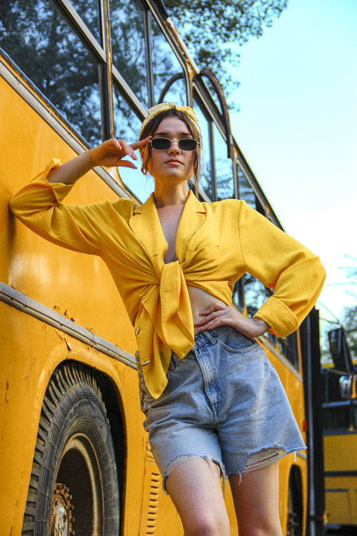
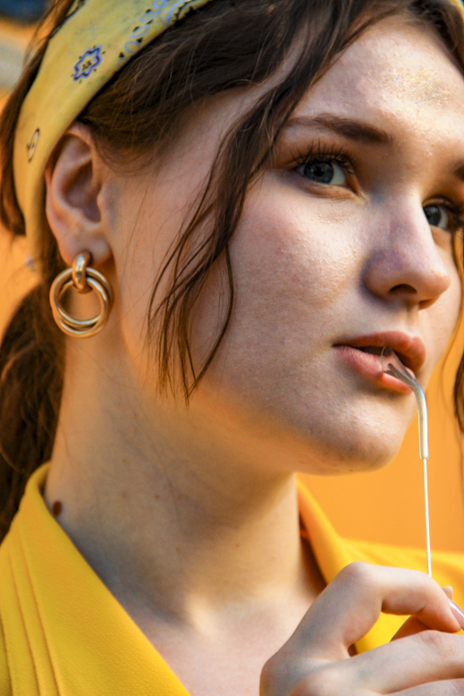
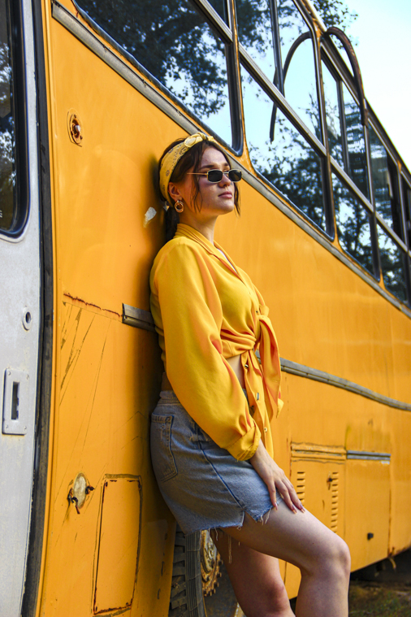
Главное в кадре — продукт.
Всё, что мешает зрителю его увидеть, убирается.
Чистая эстетика без фальши и надуманной сложности. Это максимально выверенная съемка, которая честно
показывает работу всех сторон.
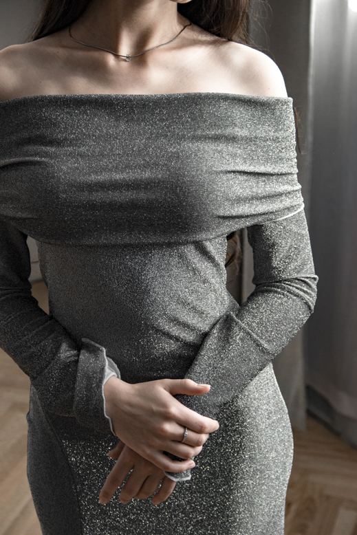
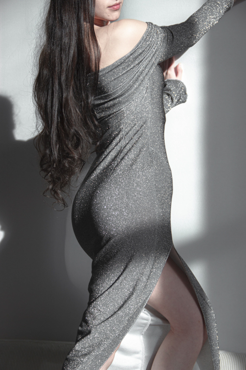
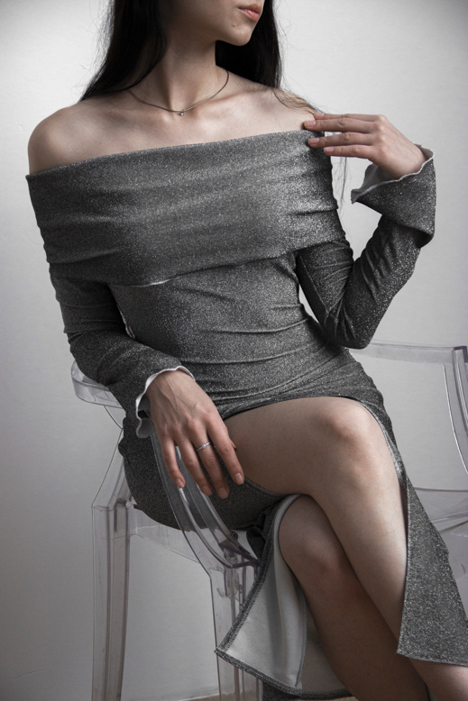
Место где царит полная свобода и ничего не мешает.
Выдавливать эмоции и заставлять позировать это мертвый кадр
во всех смыслах. Отходим от любой скованности и просто ловим классные моменты в этом пространстве.
Работая на студии получаем искренние и стильные кадры.
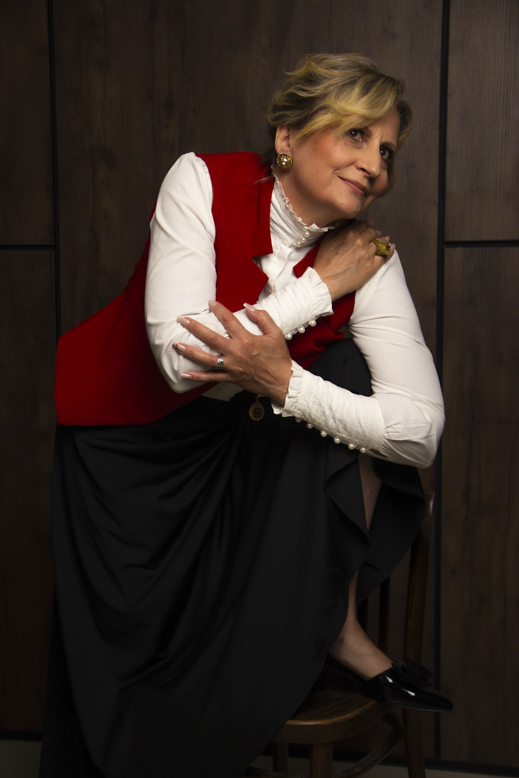
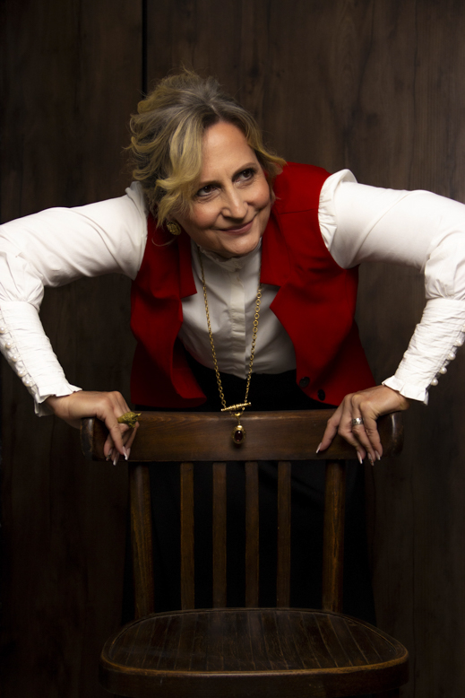
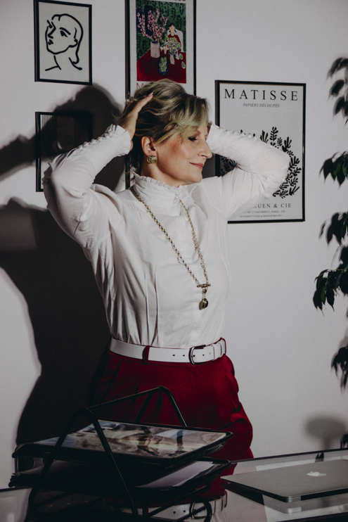
Креативная съемка — это выход за рамки привычного портрета. Когда для крутой идеи мало стандартного подхода,
используется сложный свет, необычные локации и смелые концепции.
Если задача требует создать атмосферу или
мир, которых не существует в реальности, можно подключить и искусственный интеллект.
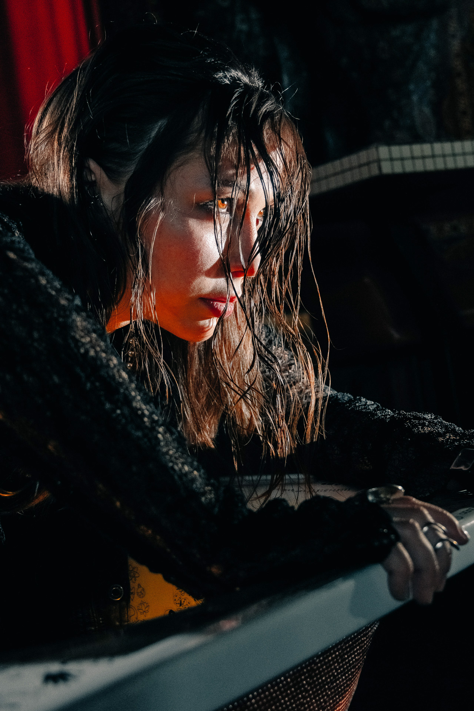
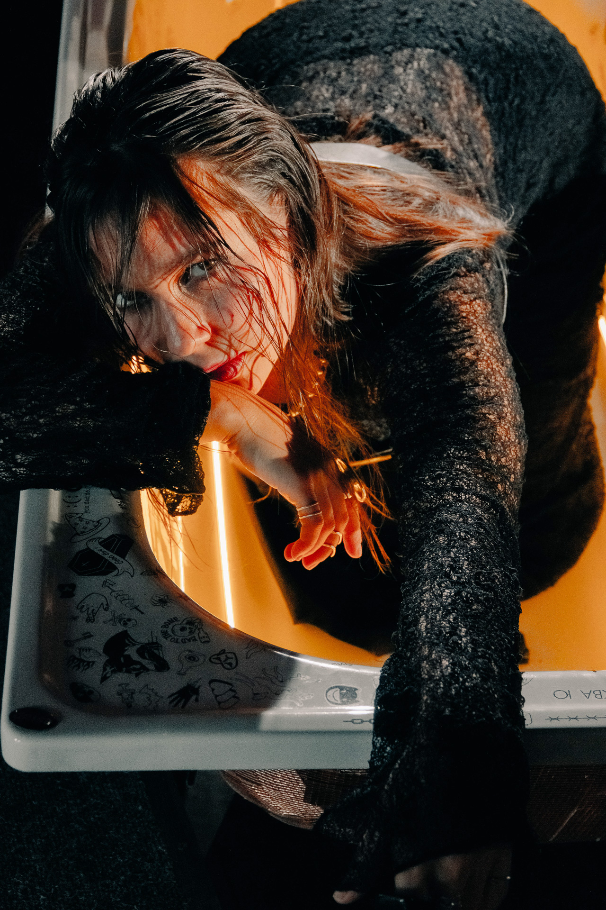
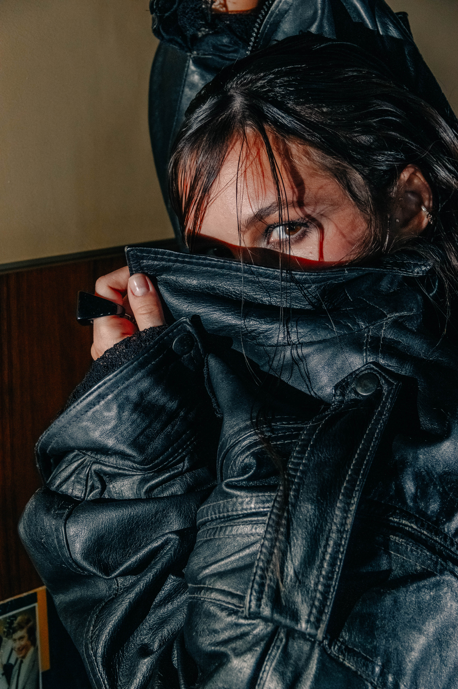
Концепция. Обсуждаем идею и референсы. Точный бюджет фиксируется после утверждения ТЗ (от 3000 ₽ / час).
Подготовка. Бронирование даты осуществляется по задатку. Подбираем локацию, свет и образы.
Съемка. Комфортный процесс под моим полным руководством и контролем технической реализации.
Результат. Отдача материала до 7 дней. Задачи, выходящие за рамки оговоренного объема, обсуждаются отдельно.
В базовую стоимость входит все самое важное: мы вместе придумываем идею, подбираем крутую локацию и подходящие образы, проводим саму съемку, а затем я делаю финальную авторскую ретушь.
В первую очередь от времени работы (от 3000 ₽/час) и сложности задумки. Если для идеальной картинки нам понадобятся услуги визажиста, стилиста или сложный реквизит — это обсуждается и оплачивается отдельно.
Студию и билеты (если мы едем снимать за пределы Волгограда) оплачивает заказчик. Но я всегда помогаю все забронировать и найти самые лучшие варианты.
Я отдаю только готовые, красивые фотографии. Исходники (RAW-файлы) — это технический «сырой» материал, который требует профессиональной проявки, поэтому я оставляю их себе.
Если съемка отменяется по вашей инициативе, задаток, к сожалению, сгорает — он покрывает брони и мое зарезервированное время.
Без проблем! Если вы хотите оставить кадры только для себя и не светиться в моем портфолио — просто скажите об этом до съемки. Это полностью бесплатно.
Вам не придется ничего искать. У меня есть своя команда проверенных мастеров макияжа и стиля. Если нужно — мы их подключим, и они сделают всё на высшем уровне.
Обычно я отдаю готовые фото за неделю. Но если кадры были нужны «еще вчера», мы всегда можем договориться о срочной обработке (1-2 дня) за небольшую доплату.